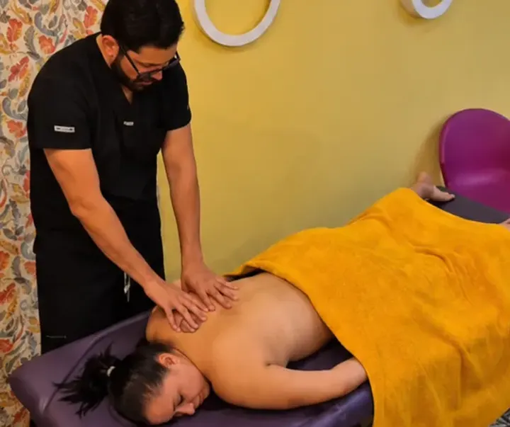
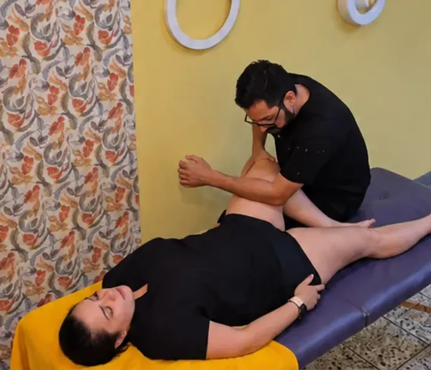
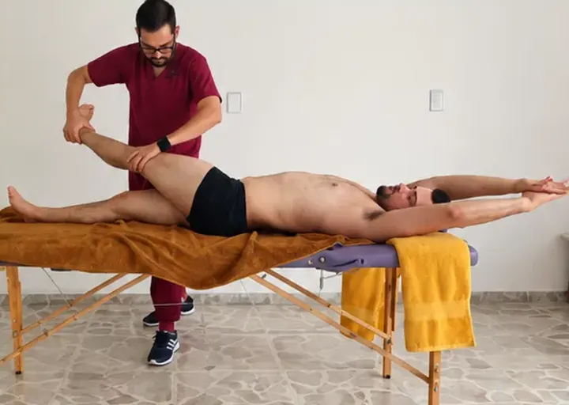
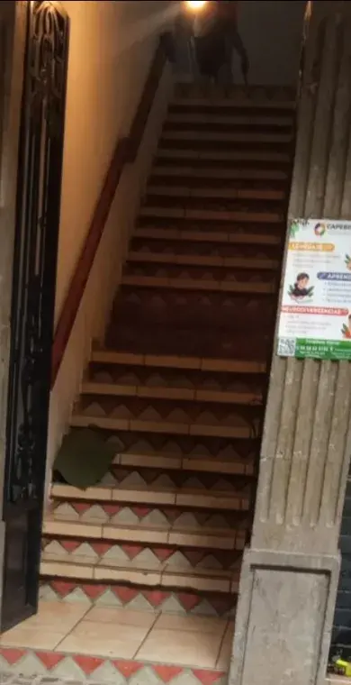

Quiropráctico · Zapotlanejo, Jalisco
Vertebrex Quiropráctico
Columna, músculos y articulaciones con técnicas manuales y atención personalizada.
Atención con cita previaQuién te atiende
Valoración antes de cada tratamiento
Formación continua en técnicas manuales y rehabilitación física. Atención individualizada y valoración previa a cada tratamiento.
Terapias
Elige tu terapia
Agrega la que necesitas y manda tu solicitud de cita en un mensaje.

Terapia Quiropráctica Superior$800De cadera hacia arriba: cuello, espalda, hombros, codo, muñeca y mano. 50 minutos.

Terapia Quiropráctica Inferior$800De cadera hacia los pies: cadera, ciática, rodillas, tobillos y pies. 50 minutos.

Terapia Quiropráctica Completa$1,500Cuerpo completo, con valoración general de movilidad y postura. 1 hora y 20 minutos.
Precios en pesos mexicanos. Para confirmar la cita se solicita un anticipo del 50%.
Qué atendemos
Molestias por zona
Atención personalizada de acuerdo con la valoración de cada paciente.
Superior · de cadera hacia arriba
Enfocada en problemas musculares, articulares y posturales de cadera hacia arriba.
- Dolor de cuello y rigidez cervical.
- Dolor de espalda alta, media y baja.
- Lumbalgia y contracturas musculares.
- Mala postura, hombros encorvados y joroba postural.
- Tensión en cuello, hombros y omóplatos.
- Dolor de cabeza relacionado con tensión muscular.
- Molestias por rectificación cervical.
- Dolor y limitación de movimiento en hombros.
- Dolor de codo, como epicondilitis y epitrocleitis.
- Molestias de muñeca y mano, incluyendo síntomas relacionados con túnel carpiano.
- Sobrecarga muscular por trabajo, ejercicio o malas posturas.
Qué incluye
Descarga muscular profunda, liberación y movilización articular, estiramientos asistidos, alphabiotismo, técnicas respiratorias y ejercicios personalizados de rehabilitación para realizar en casa. 50 minutos · $800 MXN.
Inferior · de cadera hacia los pies
Enfocada en problemas musculares, articulares y de movilidad de cadera hacia los pies.
- Dolor de cadera, glúteos y pelvis.
- Ciática o dolor que se extiende hacia la pierna.
- Molestias relacionadas con el músculo piriforme.
- Rigidez y limitación de movilidad de cadera.
- Dolor de rodillas al caminar, subir o bajar escaleras.
- Molestias asociadas con tendinopatías de rodilla.
- Sobrecarga muscular de muslos y pantorrillas.
- Dolor y rigidez de tobillos.
- Molestias persistentes después de esguinces ya valorados.
- Dolor de talones y fascitis plantar.
- Dolor en el arco y planta de los pies.
- Sobrecarga por correr, caminar o permanecer mucho tiempo de pie.
Qué incluye
Descarga muscular profunda de cadera y piernas, liberación y movilización articular, estiramientos asistidos, alphabiotismo, técnicas respiratorias y ejercicios personalizados de rehabilitación para realizar en casa. 50 minutos · $800 MXN.
Completa · cuerpo completo
Para personas con molestias en varias partes del cuerpo o que desean una atención integral de sus músculos, articulaciones, movilidad y postura.
- Dolor muscular en diferentes partes del cuerpo.
- Molestias simultáneas de cuello, espalda, cadera y piernas.
- Contracturas y tensión muscular acumulada.
- Rigidez articular y dificultad de movimiento.
- Dolor de cabeza relacionado con tensión cervical.
- Sobrecarga muscular por estrés y preocupaciones.
- Fatiga y sensación de cuerpo pesado o rígido.
- Molestias posturales por trabajo o sedentarismo.
- Sobrecarga física por ejercicio o actividades laborales.
- Molestias residuales por golpes o caídas previamente valorados y sin lesiones graves.
- Desequilibrios de movilidad y sobrecarga muscular.
- Personas que desean mejorar su movilidad y bienestar físico general.
Qué incluye
Valoración general de movilidad y postura, descarga muscular profunda de cuerpo completo, liberación y movilización articular, estiramientos asistidos, alphabiotismo, técnicas de respiración y relajación muscular, además de ejercicios personalizados de rehabilitación para realizar en casa. 1 hora y 20 minutos · $1,500 MXN.
Antes de tu cita
Cómo se agenda
- Atendemos exclusivamente con cita previa.
- Antes de confirmar se realiza un cuestionario de salud para identificar posibles contraindicaciones. No todos los pacientes son candidatos a técnicas de ajuste articular.
- Para reservar se solicita un anticipo del 50% del costo de la terapia. El anticipo no es reembolsable.
- Los cambios de fecha requieren un aviso mínimo de 24 horas.
- Lleva short cómodo y holgado y una toalla grande. Evita ropa ajustada o mezclilla.
- Efectivo
- Tarjeta
- Transferencia
Dónde atendemos
Ciudades con agenda
Los horarios y fechas disponibles dependen de la agenda de cada ciudad.
- Zapotlanejo, Jalisco Ciudad base
- Guadalajara Jalisco
- Tepatitlán de Morelos Jalisco
- Ahuacatlán Nayarit
- Sahuayo Michoacán
- Yurécuaro Michoacán
- Morelia Michoacán
Asistente
Pregunta antes de agendar
Te contesta al momento, a cualquier hora.
Hola. Pregúntame por terapias, precios, anticipo, qué llevar o en qué ciudades atendemos.
Preguntas frecuentes
Lo que más nos preguntan
¿Cuánto dura cada sesión?
Las terapias Superior e Inferior duran aproximadamente 50 minutos y la Completa 80 minutos.
¿Qué problemas atienden?
Molestias musculares y articulares, dolor cervical, dorsal y lumbar, contracturas, rigidez y limitaciones de movilidad, según valoración.
¿Qué incluye la terapia?
Descarga muscular, técnicas manuales, movilización articular, estiramientos y ejercicios personalizados según las necesidades del paciente.
¿Realizan ajustes articulares?
Sí, cuando son apropiados y seguros para la condición del paciente.
¿Atienden hernias de disco o ciática?
Se revisa cada caso individualmente. Algunos pacientes requieren valoración médica antes de recibir terapia.
¿El anticipo es reembolsable?
No. Los cambios de cita deben solicitarse con al menos 24 horas de anticipación.
¿Atienden a menores de edad?
De 15 a 18 años únicamente acompañados por su madre, padre o tutor.
¿Puedo acudir si tengo alguna enfermedad?
Antes de agendar realizamos un cuestionario de salud para determinar si es adecuado recibir el servicio.
¿Hacen servicio a domicilio o envíos?
No realizamos envíos: todos nuestros servicios son presenciales.
Horario y ubicación
Zapotlanejo
| Lunes a viernes | 10:00 a 13:00 |
| Sábado | 10:00 a 21:00 |
| Domingo | 10:00 a 18:00 |
Reforma 14, Colonia Centro, Zapotlanejo, Jalisco.A un lado de la presidencia municipal de Zapotlanejo.

Te llamamos
Déjanos tu número
Te escribimos para encontrar fecha en tu ciudad.